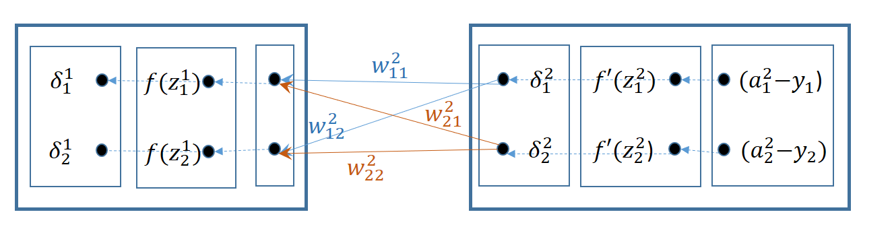

Introducción
El algoritmo de retropropagación que permite entrenar una red multicapa se introduce en 1970, pero no es hasta 1986 con el artículo de [Rumelhart et al., 1986] cuando se aprecia su potencial. Permitiendo, por ejemplo, clasificar conjuntos donde las clases no están linealmente separadas.
Definición de un perceptrón multicapa o red densa
Se dispone de un conjunto de capas \(\{0,..., l, ..., L\}\) donde 0 es la capa de entrada, L la de salida y el resto de capas \(0<l<L\) son las capas intermedias u ocultas. Una capa \(l-1\) tiene conectadas todas sus neuronas con cada una de las neuronas de la capa siguiente \(l\), por tanto harán falta L matrices de Pesos y Bias para configurar la red:
\[\{W^1, ..., W^l,...,W^L\}; \{B^1, ..., B^l,...,B^L\}\]
En general bastarán con 1 o 2 capas ocultas para definir un perceptrón.

Entrenamiento
El entrenamiento de un perceptrón multicapa requiere ajustar la configuración de cada capa por el gradiente de la función de pérdida o coste con respecto a los pesos y bias.
Para justificar de una manera sencilla este proceso de retropropagación se parte de un ejemplo lo más sencillo posible de red multicapa:
Cuya configuración es
\[\begin{split} W^1 = \begin{pmatrix} w^1_{11} & w^1_{12} \\ w^1_{21} & w^1_{22} \end{pmatrix}
\phantom{abc}
B^1 = \begin{pmatrix} b^1_1 \\ b^1_2 \end{pmatrix} \phantom{abc}
W^2 = \begin{pmatrix} w^2_{11} & w^2_{12} \\ w^2_{21} & w^2_{22} \end{pmatrix} \phantom{abc}
B^2 = \begin{pmatrix} b^2_1 \\ b^2_2 \end{pmatrix}
\end{split}\]
El superindice se utiliza aquí en la notación para identificar el número de capa. Para no confudir, donde se emplee como elevado al cuadrado, aparecerá en negrita y con tamaño mayor.
Entrenamiento en la capa 2
El entrenamiento que produce una observación \(\bar{x}=(x_1, x_2)\) en los pesos de la segunda capa conduce a resultados similares a los obtenidos en el modelo bicapa. Para seguir la aplicación de la regla de la cadena las derivadas de la función de pérdida
\[C = \frac{1}{2} \begin{bmatrix} (a^2_1 - y_1)^ {\Large \textbf 2} + (a^2_2 - y_2)^ {\Large \textbf 2} \end{bmatrix}\]
se puede seguir hacia atrás el grafo de la red hasta las variables que se está derivando.
Para obtener \(\frac{\partial C}{\partial w^2_{11}}\) se sigue el camino amarillo:
\[\frac{\partial C}{\partial w^2_{11}} = \frac{\partial C}{\partial a^2_1} \frac{\partial a^2_1}{\partial z^2_1}\frac{\partial z^2_1}{\partial w^2_{11}} = (a^2_1 - y_1) f'(z^2_1) a^1_1 = \delta^2_1 a^1_1 \]
De igual forma se obtendría
\[\frac{\partial C}{\partial w^2_{12}} = \delta^2_1 a^1_2 \phantom{abc} \frac{\partial C}{\partial b^2_1} = \delta^2_1\]
Y para obtener \(\frac{\partial C}{\partial w^2_{21}}\) se sigue el camino verde:
\[\frac{\partial C}{\partial w^2_{21}} = \frac{\partial C}{\partial a^2_2} \frac{\partial a^2_2}{\partial z^2_2}\frac{\partial z^2_2}{\partial w^2_{21}} = (a^2_2 - y_2) f'(z^2_2) a^1_1 = \delta^2_2 a^1_1 \]
De igual forma se obtendría
\[\frac{\partial C}{\partial w^2_{22}} = \delta^2_2 a^1_2 \phantom{abc} \frac{\partial C}{\partial b^2_2} = \delta^2_2\]
Lo que permite obtener los gradientes de la capa 2:
\[\frac{\partial C}{\partial \bar{z}^2} = \bar{\delta}^2 = (\delta^2_1,\delta^2_2) = (\bar{a}^2 - \bar{y}) \odot f'(\bar{z}^2)\]
\[\frac{\partial C}{\partial W^2} = (\bar{\delta}^2)^T \cdot \bar{a}_1\]
\[\frac{\partial C}{\partial B^2} = (\bar{\delta}^2)^T \]
Entrenamiento de la capa 1
El entrenamiento de la capa 1, por ejemplo para optimizar el peso \(w^1_{11}\) requiere dos caminos simultáneos (verde y amarillo) como se puede comprobar en el siguiente gráfico:

\[\frac{\partial C}{\partial w^1_{11}} = \frac{\partial C}{\partial a^2_1} \frac{\partial a^2_1}{\partial w^1_{11}} + \frac{\partial C}{\partial a^2_2} \frac{\partial a^2_2}{\partial w^1_{11}} \]
Desarrollando cada uno de los sumandos:
\[ \frac{\partial C}{\partial a^2_1} \frac{\partial a^2_1}{\partial w^1_{11}} =
\frac{\partial C}{\partial a^2_1}
\frac{\partial a^2_1}{\partial z^2_1}
\frac{\partial z^2_1}{\partial a^1_1}
\frac{\partial a^1_1}{\partial z^1_1}
\frac{\partial z^1_1}{\partial w^1_{11}} \]
\[ \frac{\partial C}{\partial a^2_2} \frac{\partial a^2_2}{\partial w^1_{11}} =
\frac{\partial C}{\partial a^2_2}
\frac{\partial a^2_2}{\partial z^2_2}
\frac{\partial z^2_2}{\partial a^1_1}
\frac{\partial a^1_1}{\partial z^1_1}
\frac{\partial z^1_1}{\partial w^1_{11}} \]
Permite poner:
\[\frac{\partial C}{\partial w^1_{11}} = \delta^2_1 w^2_{11} f'(z^1_1) x_1 + \delta^2_2 w^2_{21} f'(z^1_1) x_1 =
(\delta^2_1 w^2_{11} + \delta^2_2 w^2_{21}) f'(z^1_1) x_1 = \delta^1_1 x_1\]
De igual forma se tiene:
\[\frac{\partial C}{\partial w^1_{12}} = \delta^1_1 x_2 \phantom{abc} \frac{\partial C}{\partial b^1_1} = \delta^1_1\]
Para optimizar el peso \(w^1_{21}\) requiere también dos caminos simultáneos (verde y amarillo) como se puede comprobar en el siguiente gráfico:
\[\frac{\partial C}{\partial w^1_{21}} = \frac{\partial C}{\partial a^2_1} \frac{\partial a^2_1}{\partial w^1_{21}} + \frac{\partial C}{\partial a^2_2} \frac{\partial a^2_2}{\partial w^1_{21}} \]
Desarrollando cada uno de los sumandos:
\[ \frac{\partial C}{\partial a^2_1} \frac{\partial a^2_1}{\partial w^1_{21}} =
\frac{\partial C}{\partial a^2_1}
\frac{\partial a^2_1}{\partial z^2_1}
\frac{\partial z^2_1}{\partial a^1_2}
\frac{\partial a^1_2}{\partial z^1_2}
\frac{\partial z^1_2}{\partial w^1_{21}} \]
\[ \frac{\partial C}{\partial a^2_2} \frac{\partial a^2_2}{\partial w^1_{21}} =
\frac{\partial C}{\partial a^2_2}
\frac{\partial a^2_2}{\partial z^2_2}
\frac{\partial z^2_2}{\partial a^1_2}
\frac{\partial a^1_2}{\partial z^1_2}
\frac{\partial z^1_2}{\partial w^1_{21}} \]
Permite poner:
\[\frac{\partial C}{\partial w^1_{21}} = \delta^2_1 w^2_{12} f'(z^1_2) x_1 + \delta^2_2 w^2_{22} f'(z^1_2) x_1 =
(\delta^2_1 w^2_{12} + \delta^2_2 w^2_{22}) f'(z^1_2) x_1 = \delta^1_2 x_1\]
De igual forma se tiene:
\[\frac{\partial C}{\partial w^1_{22}} = \delta^1_2 x_2 \phantom{abc} \frac{\partial C}{\partial b^1_2} = \delta^1_2\]
Para optimizar el peso \(w^1_{21}\) requiere también dos caminos simultáneos (verde y amarillo) como se puede comprobar en el siguiente gráfico:
\[\frac{\partial C}{\partial w^1_{21}} = \frac{\partial C}{\partial a^2_1} \frac{\partial a^2_1}{\partial w^1_{21}} + \frac{\partial C}{\partial a^2_2} \frac{\partial a^2_2}{\partial w^1_{21}} \]
Desarrollando cada uno de los sumandos:
\[ \frac{\partial C}{\partial a^2_1} \frac{\partial a^2_1}{\partial w^1_{21}} =
\frac{\partial C}{\partial a^2_1}
\frac{\partial a^2_1}{\partial z^2_1}
\frac{\partial z^2_1}{\partial a^1_2}
\frac{\partial a^1_2}{\partial z^1_2}
\frac{\partial z^1_2}{\partial w^1_{21}} \]
\[ \frac{\partial C}{\partial a^2_2} \frac{\partial a^2_2}{\partial w^1_{21}} =
\frac{\partial C}{\partial a^2_2}
\frac{\partial a^2_2}{\partial z^2_2}
\frac{\partial z^2_2}{\partial a^1_2}
\frac{\partial a^1_2}{\partial z^1_2}
\frac{\partial z^1_2}{\partial w^1_{21}} \]
Permite poner:
\[\frac{\partial C}{\partial w^1_{21}} = \delta^2_1 w^2_{12} f'(z^1_2) x_1 + \delta^2_2 w^2_{22} f'(z^1_2) x_1 =
(\delta^2_1 w^2_{12} + \delta^2_2 w^2_{22}) f'(z^1_2) x_1 = \delta^1_2 x_1\]
De igual forma se tiene:
\[\frac{\partial C}{\partial w^1_{22}} = \delta^1_2 x_2 \phantom{abc} \frac{\partial C}{\partial b^1_2} = \delta^1_2\]
Retropropagación
Resumiendo, el gradiente \(\bar{\delta}^1\) se puede poner:
\[\bar{\delta}^1 = (\delta^1_1, \delta^1_2) = (\delta^2_1 w^2_{11} + \delta^2_2 w^2_{21}, \delta^2_1 w^2_{12} + \delta^2_2 w^2_{22}) \odot f'(z^1_1, z^1_2)
\]
\[\begin{split} \begin{bmatrix} \bar{\delta}^1 \end{bmatrix}^T= \begin{bmatrix} \begin{pmatrix} w^2_{11} & w^2_{21} \\ w^2_{12} & w^2_{22} \end{pmatrix} \begin{pmatrix}\delta^2_1 \\ \delta^2_2 \end{pmatrix} \end{bmatrix} \odot f'\begin{pmatrix} \begin{bmatrix} \bar{z}^1 \end{bmatrix}^T \end{pmatrix} =
(W^2)^T \cdot \begin{bmatrix} \bar{\delta}^2 \end{bmatrix} ^T \odot f'\begin{pmatrix} \begin{bmatrix} \bar{z}^1 \end{bmatrix}^T \end{pmatrix}\end{split}\]
Que también se puede poner como:
\[ \bar{\delta}^1 =
\begin{bmatrix} \bar{\delta}^2 \cdot W^2 \end{bmatrix} \odot f'\begin{pmatrix}\bar{z}^1\end{pmatrix}\]
Graficamente se puede observar que el gradiente \(\bar{\delta}\) se transmite desde la última capa hasta la capa 1 funcionando la red densa de forma inversa. Está transformación lineal para pasar de \(\bar{\delta}^2\) a \(\bar{\delta}^1\) tiene lugar con una matriz \(W^2\) traspuesta con respecto al proceso de activación.

Finalmente las formulas que permiten obtener los gradientes \(\bar{\delta}\) en una capa \(l < L\) para una observación \(\bar{x}\) o para un bloque de observaciones \(X\) es:
\[ ( \bar{\delta}^l )^T = (W^{l+1})^T \cdot (\bar{\delta}^{l+1} )^T \odot f'\begin{bmatrix} (z^l)^T \end{bmatrix} \]
que puede adoptar también la siguiente forma:
\[\bar{\delta}^l = \bar{\delta}^{l+1} \cdot W^{l+1} \odot f'(z^l) \]
Note
Los gradientes delta se transmiten desde la capa superior a partir de la matriz de pesos transpuesta. La transposición hace que el sentido de transmisión en la red sea el opuesto.
Activación (forward)
\[\begin{pmatrix} \bar{z}^l \end{pmatrix}^T = W^l \cdot \begin{pmatrix} \bar{a}^{(l-1)} \end{pmatrix}^T + B^l\]
\[\bar{a}^l = f \begin{pmatrix} \bar{z}^l \end{pmatrix}\]
Retro-Propagación (backward)
\[( \bar{\delta}^l )^T = (W^{l+1})^T \cdot (\bar{\delta}^{l+1} )^T \odot f'\begin{bmatrix} (z^l)^T \end{bmatrix}\]
\[\bar{\delta}^l = \bar{\delta}^{l+1} \cdot W^{l+1} \odot f'(z^l) \]
Entrenamiento
\[ W^l[t+1] = W^l[t] - \eta \cdot \begin{pmatrix} \bar{\delta}^l \end{pmatrix} ^T \cdot \bar{a}^{(l-1)} \]
\[ B^l[t+1] = B^l[t] - \eta \cdot \begin{pmatrix} \bar{\delta}^l \end{pmatrix} ^T \]

{kind=link}
{kind=link}
{kind=link}
{kind=link}